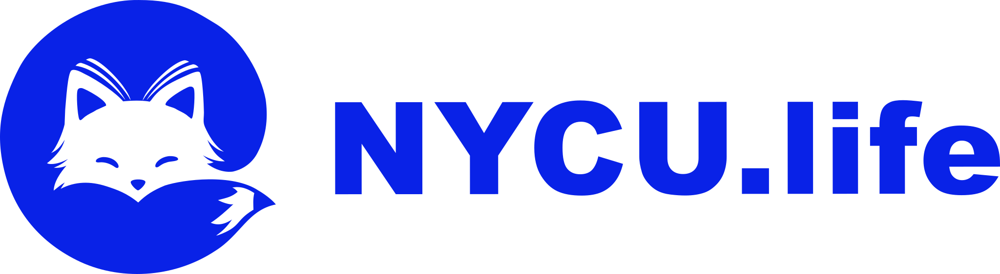
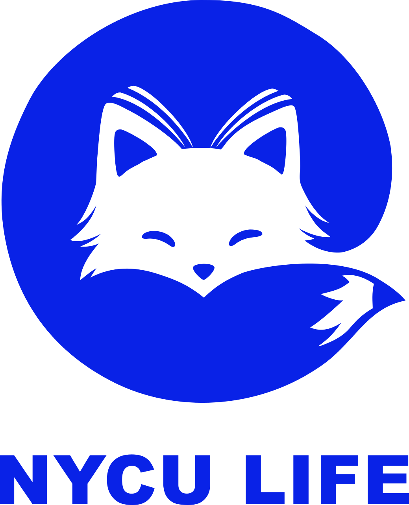
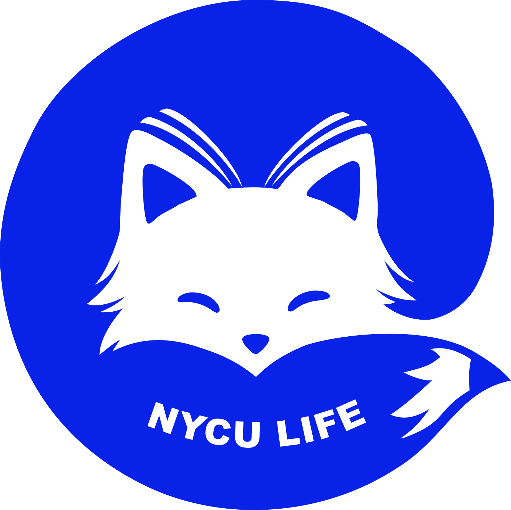
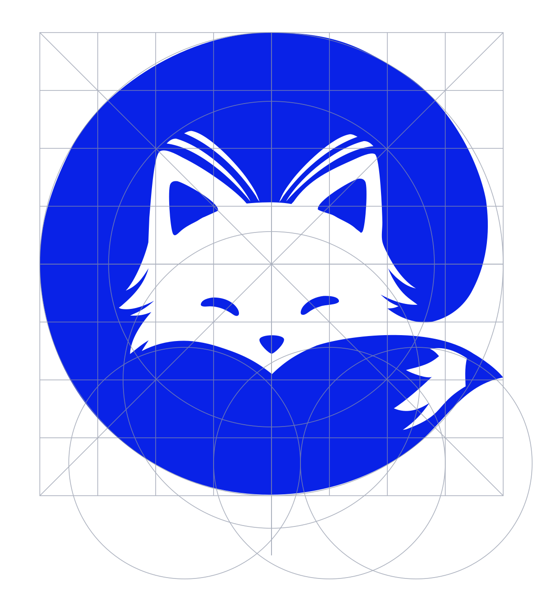

清楚 Clear
先讓人理解，再讓人行動。層級、文字與狀態都必須直覺。
NYCU LIFE · Brand system 2.0
以竹狐的靈活與溫度，串起資訊、知識與每天的校園生活。這裡是 NYCU LIFE 的品牌識別、數位設計系統與 AI UI Skill。
01 / BRAND
NYCU LIFE 不只是資訊彙整工具，而是一個理解學生情境的校園生活入口。品牌以狐狸代表靈活與智慧，以書本代表知識，以鉛筆代表行動，把複雜資訊變得清楚、親近、可用。
先讓人理解，再讓人行動。層級、文字與狀態都必須直覺。
把分散的校園知識與服務串成一條完整、可信任的路徑。
用友善、具體而不官僚的語氣，陪伴每一個校園日常。
THE FOX, BOOK & PENCIL
02 / IDENTITY
完整資產庫包含六種構型、十二個 SVG。每種構型都同時展示淺色模式的藍色版與深色模式的白色版；保留原始比例與色彩，不重畫、不變形、不加陰影。










基本標誌以正方形網格、中心軸與相互銜接的圓弧建立比例關係。圖面以向量方式呈現，放大仍保持銳利；製圖線不是 Logo 的正式輸出內容。
正式 master rule 發布前，四周至少保留基本標誌寬度的 1/4。
基本標誌至少 32px；橫式組合建議至少 140px。正式值待品牌方確認。
不得拉伸、旋轉、描邊、套用漸層，亦不得自行替換 Logo 文字。
03 / FOUNDATIONS
正式 Logo 藍與互動藍各司其職：#0922E7 固守品牌識別，#0045F2 用於按鈕與操作。所有文字與狀態皆透過 semantic tokens 達成一般文字 WCAG AA。
點選色票即可複製色碼。
查看完整 Light／Dark palette 與對比規則校園 Life.
TYPOGRAPHY
網站、介面與長文統一使用 Noto Sans TC，讓繁中與英文共享一致的節奏。只使用 400、500、600、700 四種字重；不要用 heading level 表示字級，改用 display、title、heading、body 等視覺角色。
04 / DIGITAL UI
元件以 semantic tokens 建立 light / dark 兩套角色；互動區至少 44×44px，具備 hover、pressed、focus-visible、disabled、loading 與錯誤回饋。
光復校區 · 16:30–20:30
活動會在開始前 30 分鐘提醒你。
正在同步最新的校園資訊。
請檢查網路後再試一次。
NYCU LIFE UI SKILL
Skill 會引導 agent 選對 Logo、套用 semantic tokens、完成 responsive 與 dark mode，並在交付前檢查鍵盤操作、焦點與色彩對比。
npx skills add nycu-life/nycu-life-ui-skill
範例：「Use $nycu-life-ui to brand and review this event page for mobile, dark mode, and accessibility.」
05 / RESOURCES
{kind=link}
{kind=link}
{kind=link}
{kind=link}
{kind=link}
{kind=link}
{kind=link}
{kind=link}
{kind=link}
{kind=link}
{kind=link}
{kind=link}